Les cytokines (TNF-α, IL-1, IL-6, interférons, facteurs de croissance) et les médiateurs locaux : eicosanoïdes (prostaglandines, thromboxane, leucotriènes), NO, endothélines, histamine. C'est le chapitre de la pharmacologie des anti-inflammatoires : le prof l'explique « parce que ce sont parmi les médicaments les plus utilisés » (AINS, aspirine, corticoïdes, antihistaminiques). Molécules du listing : acide arachidonique, EPA, L-arginine, N-hydroxy-L-arginine, L-citrulline, histamine. À laisser tomber : PAF, bradykinine et kallidine.
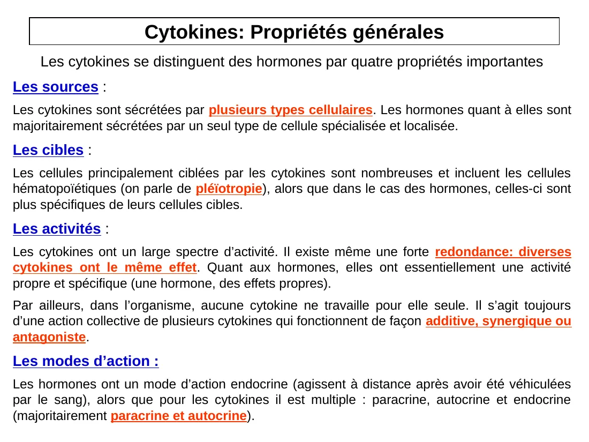
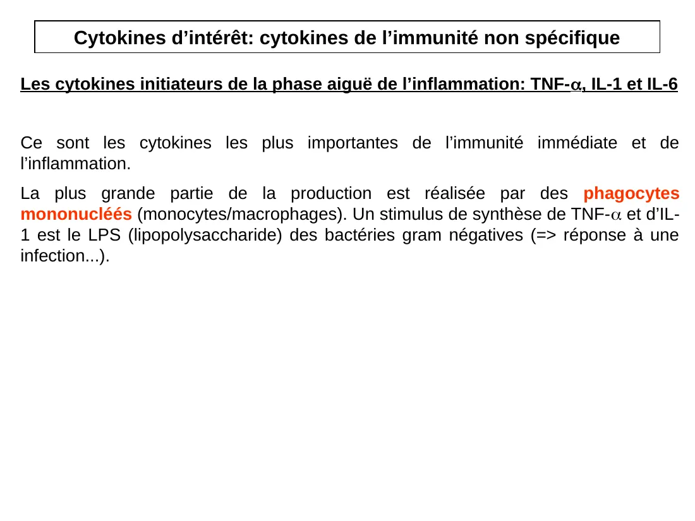
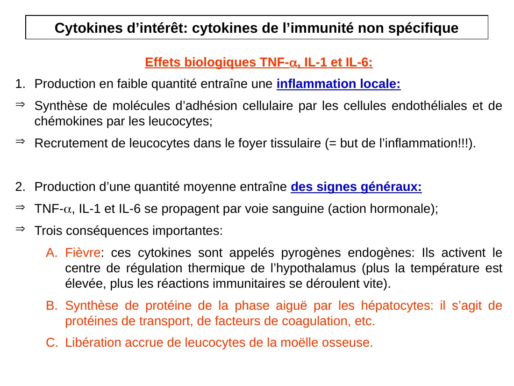
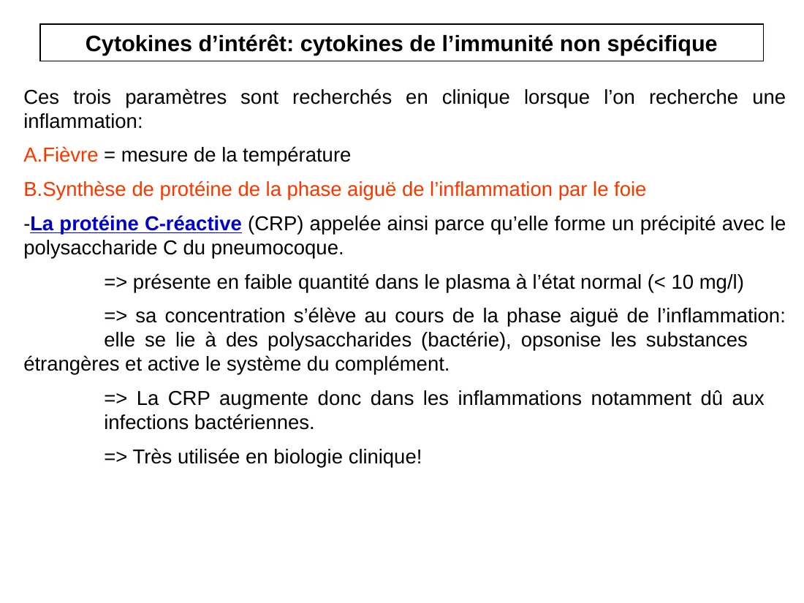
Peptides ou glycoprotéines solubles qui règlent croissance, involution et immunité. Différences avec les hormones : sécrétées par plusieurs types cellulaires (pas une glande), action surtout autocrine ou paracrine (parfois endocrine), pléiotropie (une cytokine, plusieurs effets) et redondance (plusieurs cytokines, un même effet). Récepteurs membranaires à 2 sous-unités, souvent liés à des tyrosine kinases (JAK).
Produites surtout par les macrophages activés. En petite quantité : inflammation locale (molécules d'adhésion endothéliales, recrutement des leucocytes, chimiotactisme, induction de la COX-2). En grande quantité : effets systémiques : fièvre (hypothalamus, PGE2), protéines de la phase aiguë par le foie (CRP, fibrinogène), leucocytose. Ce sont les 3 paramètres recherchés en clinique.
TNF-α, IL-1 et IL-6 atteignent l'hypothalamus et y induisent la COX-2 → PGE2 → élévation du point de consigne thermique. C'est pourquoi les AINS et le paracétamol font baisser la fièvre.
Le TNF (tumor necrosis factor) : antitumoral et anti-infectieux, mais principal responsable du choc septique et impliqué dans la maladie de Crohn, la polyarthrite, l'athérosclérose → anti-TNF (anticorps). Interférons : type I (α, β) antiviraux (cellules infectées), type II (γ) immunomodulateur ; utilisés contre certaines hépatites, la sclérose en plaques, la leucémie myéloïde chronique.
Hématopoïétiques : EPO, TPO, G-CSF, GM-CSF (chapitre 2.6). Non hématopoïétiques : FGF, EGF, PDGF, VEGF (angiogenèse, récepteurs VEGFR à tyrosine kinase). pour information anti-VEGF (bévacizumab) contre l'angiogenèse tumorale et dans la DMLA.
Phospholipides membranaires —phospholipase A2→ acide arachidonique (C20:4, ω-6). Puis deux voies : COX → PGG2 → PGH2 → prostaglandines (PGE2, PGI2 = prostacycline) et thromboxane A2 ; 5-LOX → 5-HPETE → LTA4 → LTB4 et peptido-leucotriènes (LTC4, D4, E4). Les corticoïdes bloquent tout en amont (lipocortine → PLA2) : « vous n'avez pas de plus puissants anti-inflammatoires que les stéroïdiens ».
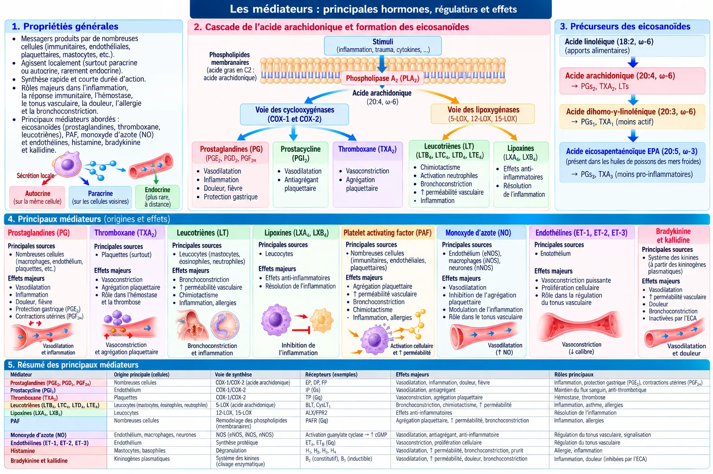
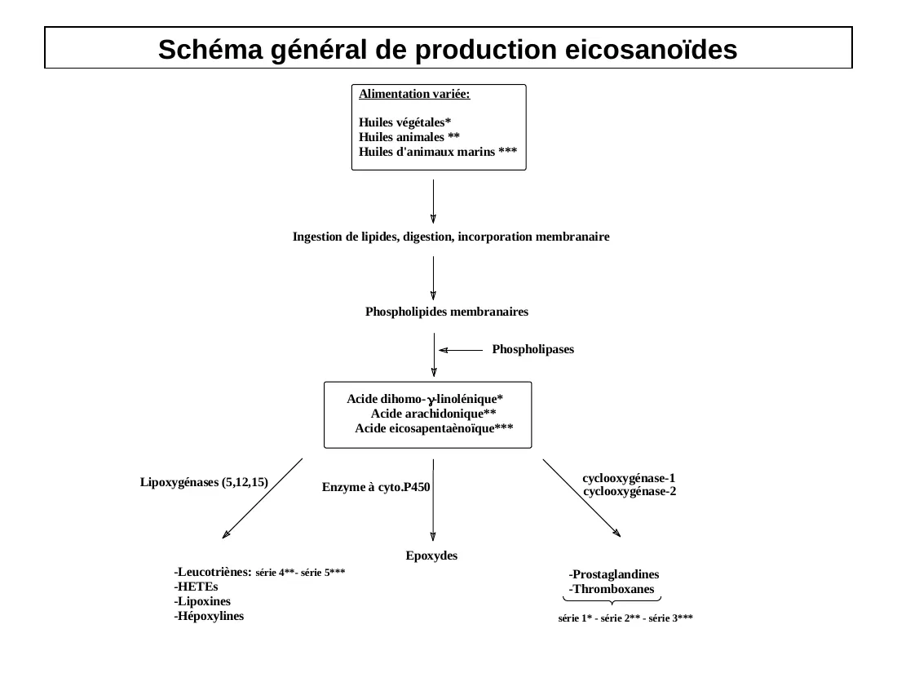
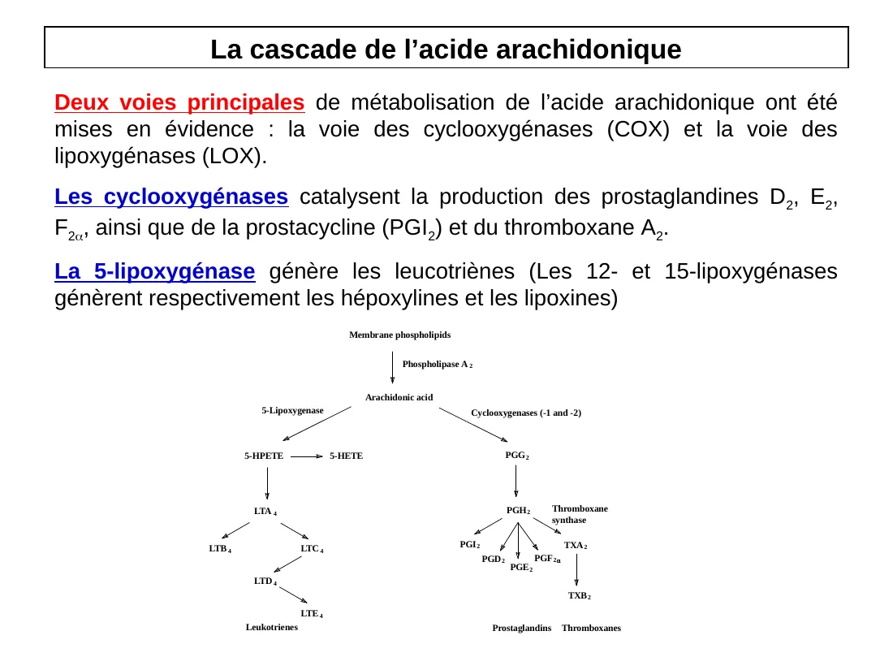
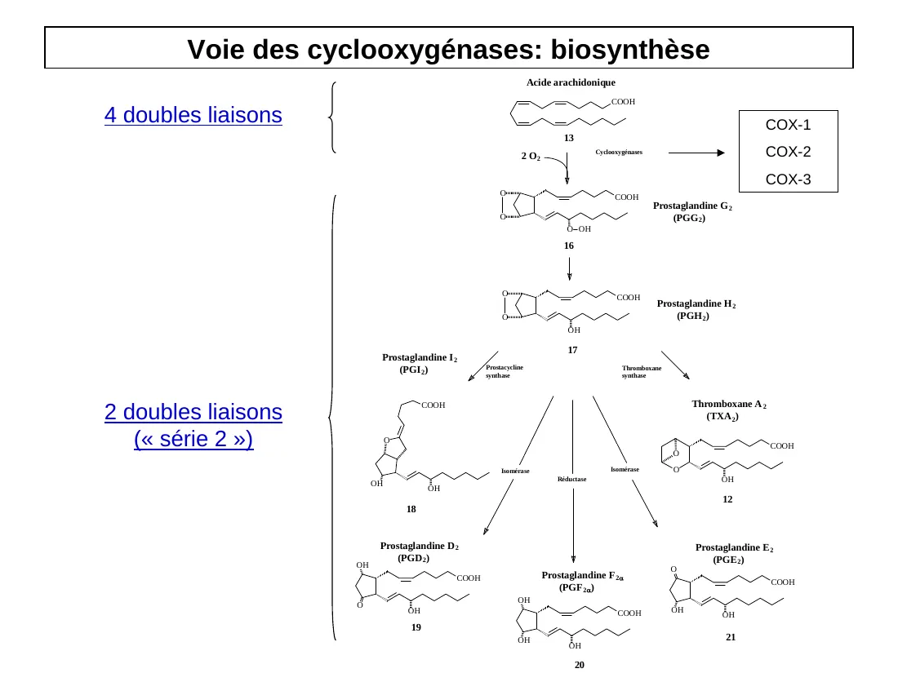
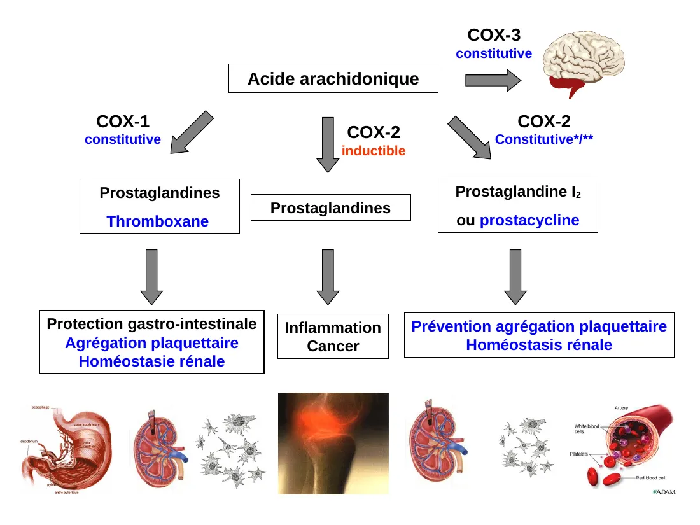
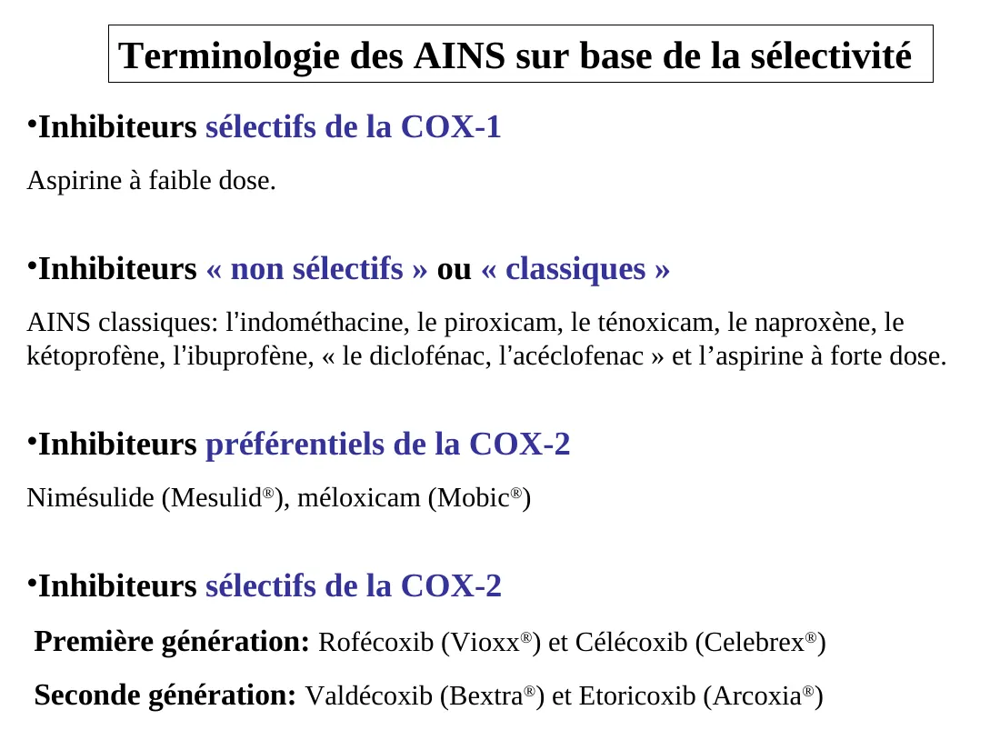
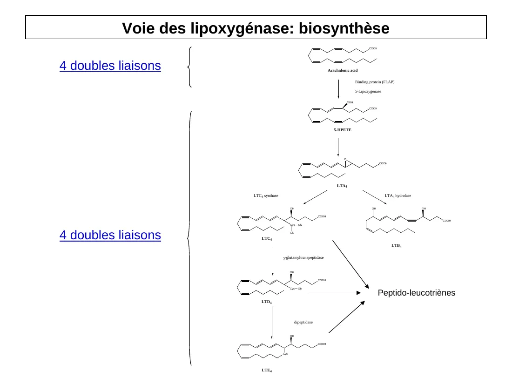
| COX-1 | COX-2 | |
|---|---|---|
| Type | Constitutive | Inductible (cytokines, inflammation) ; constitutive dans l'endothélium, le rein, le cerveau |
| Rôles | Protection gastrique (PGE2 : mucus), homéostasie rénale, TXA2 plaquettaire (agrégation) | Inflammation, douleur, fièvre, cancer ; PGI2 endothéliale |
| Inhibiteurs | Aspirine à faible dose (sélective de fait) | Coxibs (sélectifs) ; AINS classiques = les deux |
Acide arachidonique : C20, 4 doubles liaisons (5, 8, 11, 14), ω-6, dérivé de l'acide linoléique, stocké en position 2 des phospholipides → prostaglandines et thromboxane de la série 2. EPA (acide eicosapentaénoïque) : C20, 5 doubles liaisons, ω-3 (huiles de poisson) → série 3 : TXA3 peu agrégant mais PGI3 vasodilatatrice et anti-agrégante → effet antithrombotique (avec une polémique sur les bénéfices réels).
Récepteurs RCPG (AMPc ou IP3/DAG). PGE2 : via COX-1, mucus gastrique et débit rénal ; via COX-2, inflammation (douleur, fièvre, rougeur, œdème) ; contractions utérines. TXA2 (plaquettes) : pro-agrégant et vasoconstricteur. PGI2 (endothélium) : anti-agrégante et vasodilatatrice. La balance TXA2/PGI2 règle le risque de thrombose artérielle.
Ils bloquent la COX-2 de l'endothélium (moins de PGI2 anti-agrégante) sans toucher la COX-1 des plaquettes (TXA2 intact) : la balance penche vers l'agrégation et la vasoconstriction → thrombose artérielle.
Produits par les leucocytes et macrophages (5-LOX + FLAP). LTB4 : chimiotactisme (attire les leucocytes). Peptido-leucotriènes (LTC4, D4, E4) : bronchoconstriction puissante, perméabilité vasculaire ↑ (œdème). Rôle majeur dans l'asthme et l'allergie → antileucotriènes (montélukast).
L'aspirine (acide acétylsalicylique) acétyle une sérine des COX : inhibition irréversible. La plaquette n'a pas de noyau : elle ne peut pas refaire de COX-1. 75-325 mg une fois par jour suffit à bloquer le TXA2 pour toute la vie de la plaquette (8-10 jours) → anti-agrégant. À dose plus forte, elle inhibe aussi la COX-2 → anti-inflammatoire, antalgique, antipyrétique.
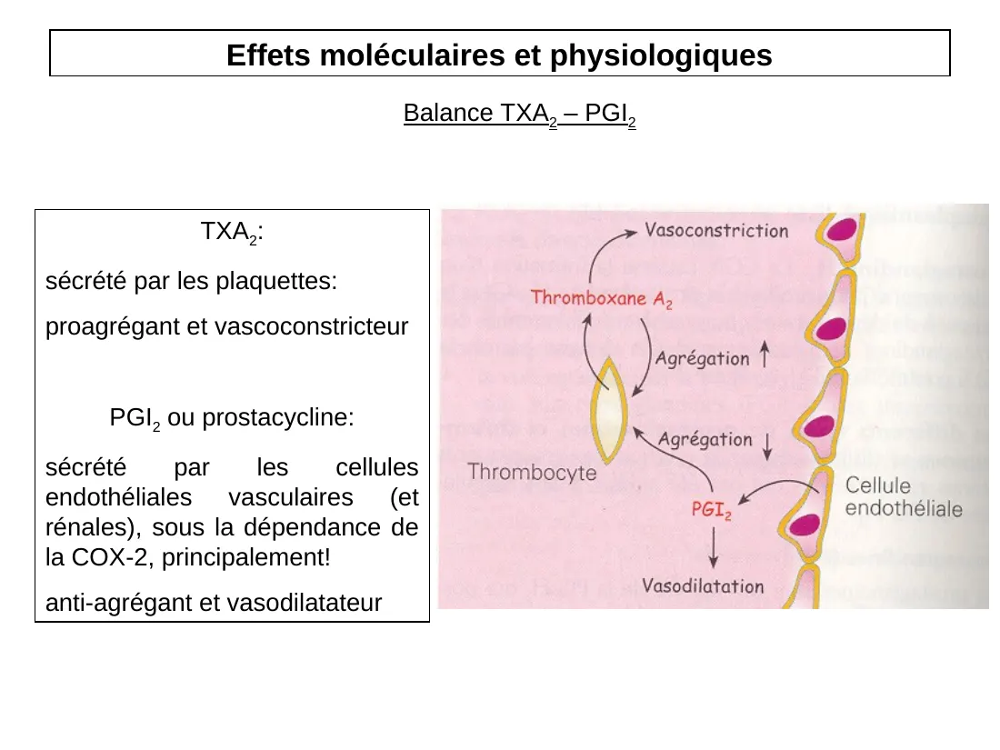
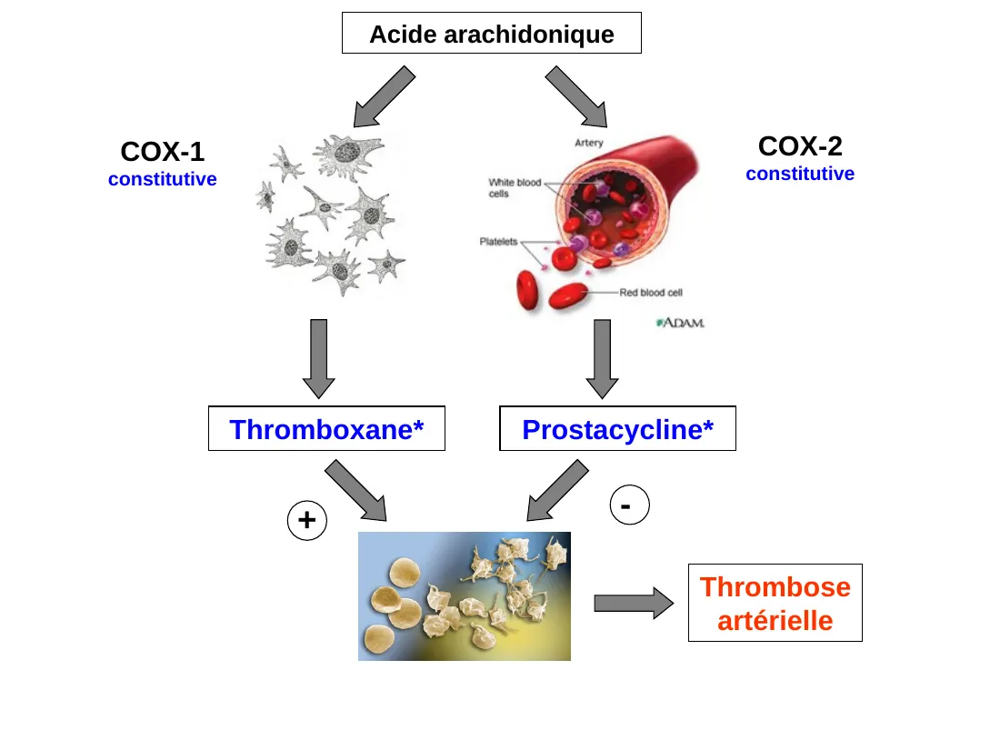
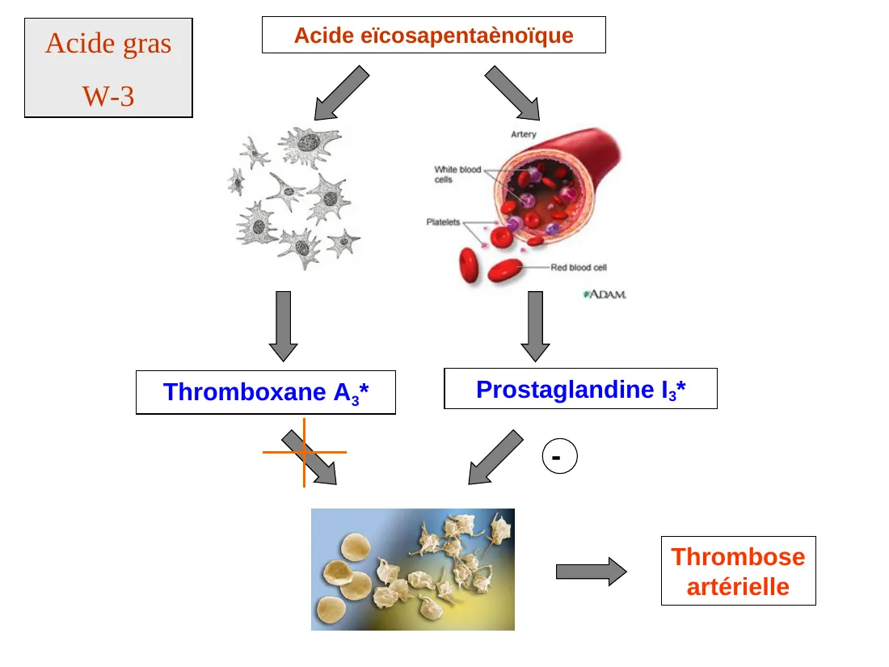
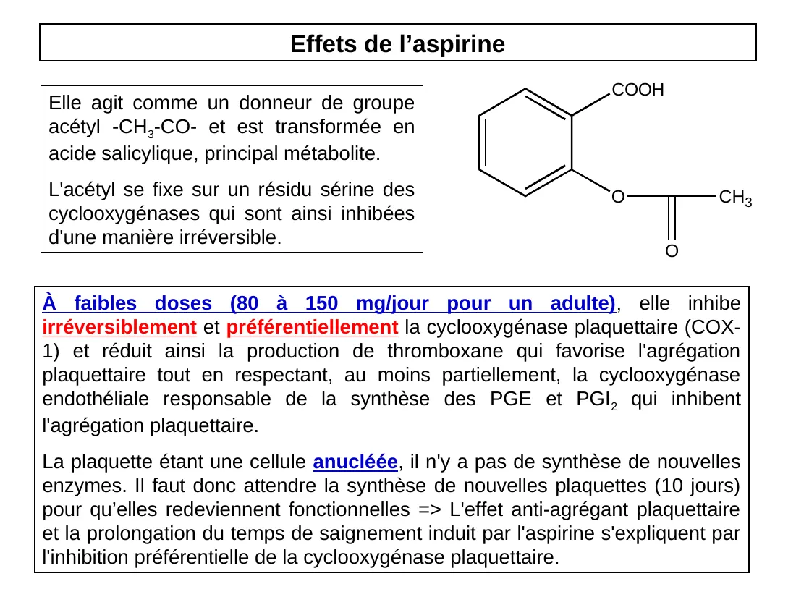
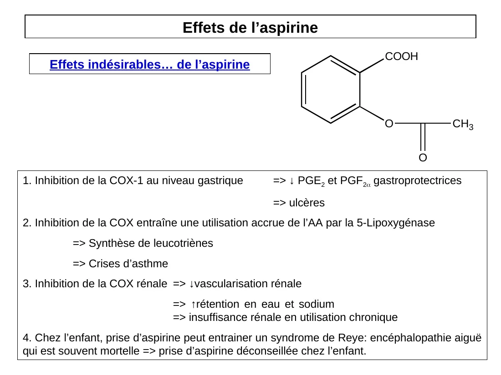
Les cellules endothéliales ont un noyau : elles resynthétisent leur COX et refont de la PGI2. Les plaquettes, sans noyau, restent bloquées jusqu'à leur remplacement. D'où l'aspirine « cardio » quotidienne, et l'arrêt quelques jours avant une chirurgie ou un don de sang.
1) Ulcères : moins de PGE2 gastroprotectrice (COX-1). 2) Asthme : l'acide arachidonique non utilisé par la COX part vers la 5-LOX → plus de leucotriènes → bronchoconstriction (pas d'aspirine ni d'AINS en 1re intention chez l'asthmatique). 3) Rein : moins de perfusion rénale (COX-1) → insuffisance rénale. 4) Saignements. 5) Chez l'enfant : syndrome de Reye (spécifique à l'aspirine) → ibuprofène ou paracétamol.
En bloquant la COX, on accumule l'acide arachidonique, qui est dévié vers la 5-lipoxygénase : plus de peptido-leucotriènes, puissants bronchoconstricteurs.
Molécules à dessiner : L-arginine → N-hydroxy-L-arginine → L-citrulline + NO, par la NO synthase (enzyme héminique, NADPH, O₂). Le NO est à la fois médiateur et neuromédiateur, et un gaz : c'est l'ancien EDRF (endothelium-derived relaxing factor).
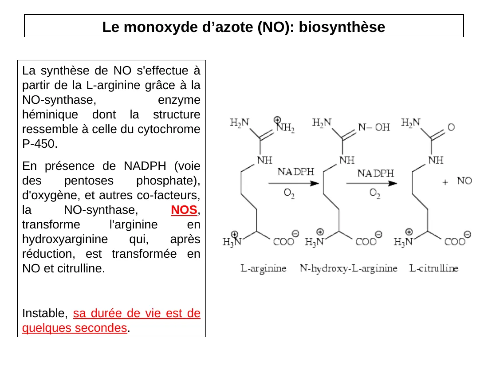
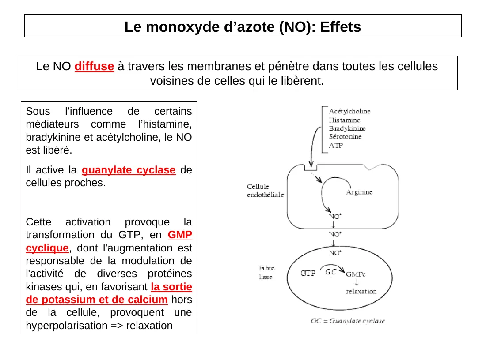
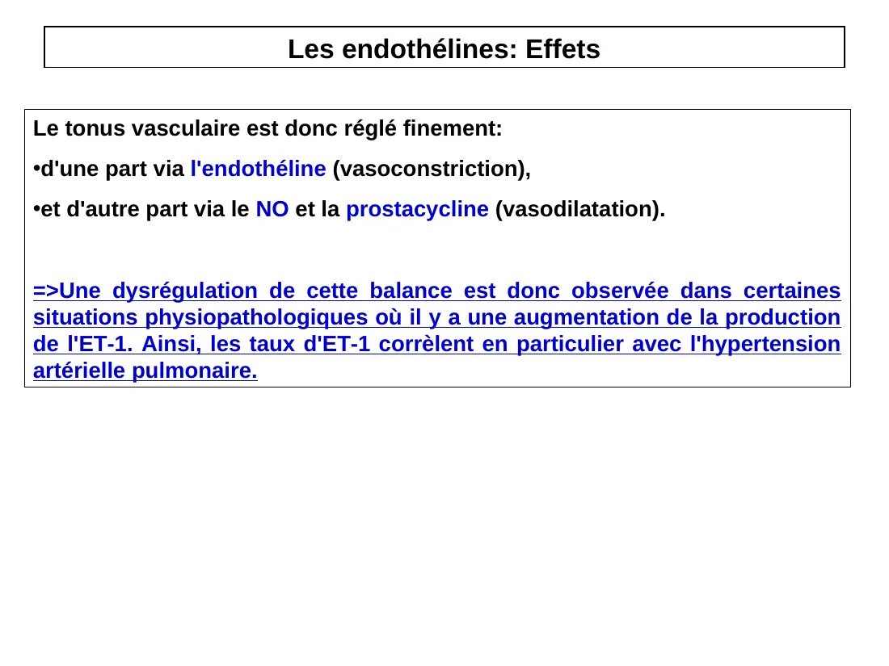
eNOS (endothélium) et nNOS (neurones) : constitutives, Ca²⁺-calmoduline dépendantes, petites quantités. iNOS : inductible par les cytokines pro-inflammatoires dans les macrophages → grandes quantités de NO (défense, mais aussi vasodilatation massive du choc septique).
Histamine, bradykinine ou acétylcholine stimulent l'endothélium → NO → diffuse dans le muscle lisse → guanylate cyclase soluble → GMPc → relaxation. Il inhibe aussi l'agrégation plaquettaire. Médicaments donneurs de NO : dérivés nitrés (trinitrine, angor), nitroprussiate, molsidomine ; les inhibiteurs de la PDE5 prolongent son effet.
Peptides de 21 AA (2 ponts disulfures), ET-1 la plus importante, formée par l'enzyme de conversion des endothélines. Effet paracrine sur le muscle lisse : vasoconstriction très puissante ; effet autocrine sur l'endothélium : libération de NO et de PGI2 (frein). Le tonus vasculaire = endothéline (constriction) vs NO + PGI2 (dilatation). Antagonistes (bosentan) dans l'hypertension artérielle pulmonaire.
Molécule à dessiner : histidine → histamine (histidine décarboxylase, perte du CO₂). Ce que le prof veut : « les récepteurs H1 sont ceux qui sont impliqués dans la réponse inflammatoire locale, notamment la vasodilatation : c'est ça que vous devez retenir ».
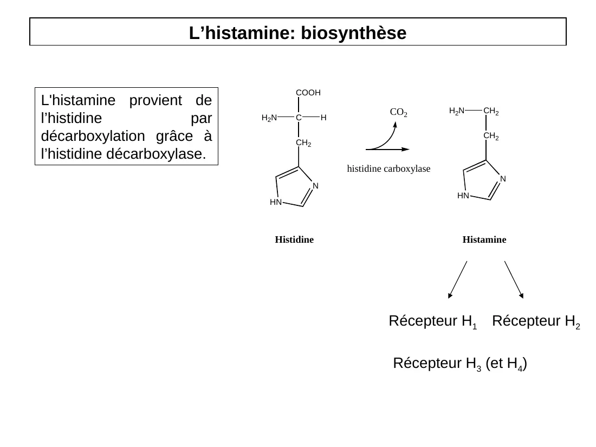
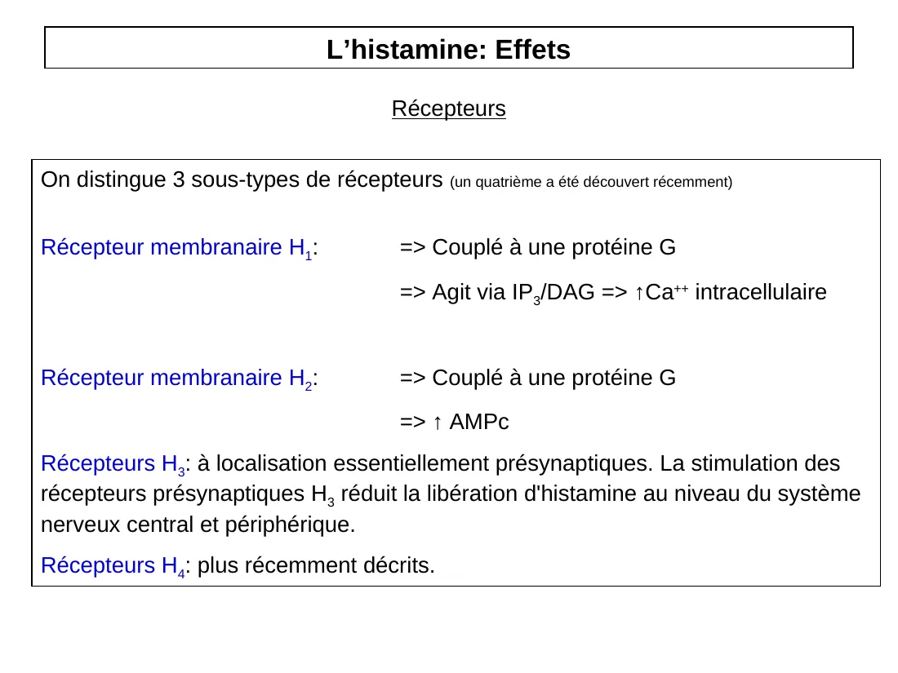
| Récepteur | Protéine G | Effets | Médicaments |
|---|---|---|---|
| H1 | Gq → IP3/DAG, Ca²⁺ | Bronchoconstriction, contraction digestive, vasodilatation (via NO) et perméabilité ↑ (œdème, urticaire), prurit ; SNC (éveil) | Antihistaminiques H1 (allergie ; sédation pour les anciens) |
| H2 | Gs → AMPc | Sécrétion gastrique d'HCl ; vasodilatation ; cœur | Anti-H2 (ranitidine, famotidine) |
| H3 | Gi | Présynaptique (SNC) : freine la libération d'histamine | — |
L'allergène + IgE fixées sur les mastocytes (peau, poumons, tube digestif) → dégranulation : histamine, leucotriènes, cytokines → vasodilatation, œdème, bronchoconstriction. En systémique : choc anaphylactique (chute de pression) → adrénaline IM immédiate (α1 vasoconstriction, β2 bronchodilatation), puis antihistaminique et corticoïde de fond.
Relevé dans tes enregistrements : cours des médiateurs du 24/10/2025 (JMD). Le cours sur les cytokines n'a pas d'enregistrement : cette partie suit les dias.
Questions reformulées à partir des points sur lesquels le prof a insisté (mécanisme de l'aspirine, NO, histamine).
Sur la base d'un schéma, présentez la cascade de l'acide arachidonique et expliquez le mécanisme d'action et les effets indésirables de l'aspirine.
Un patient asthmatique prend de l'ibuprofène pour une douleur et fait une crise. Expliquez.